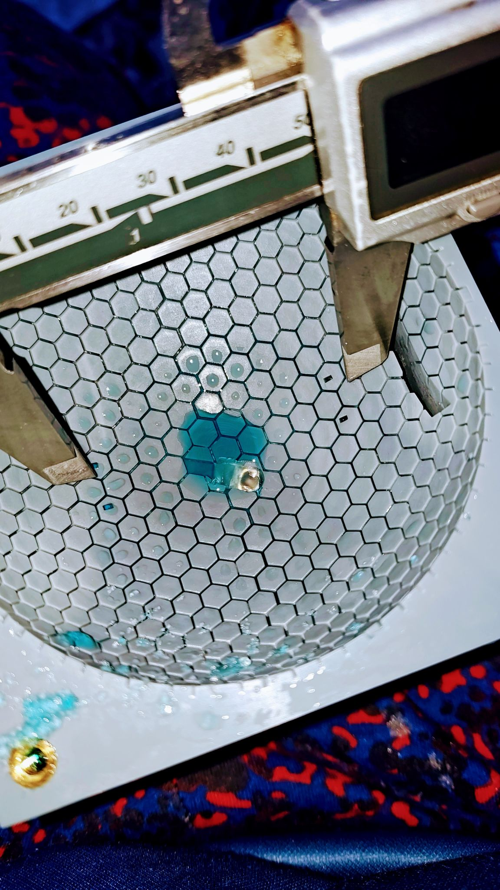

Chapter 09 · NASA Glenn Research Center, Ohio
Drop testing at NASA Glenn
Three drops at the NASA Glenn 2.2-Second Drop Tower. Scroll to run the camera through the fall, frame by frame.

Frames from the NASA Glenn result footage. Camera: HexaFlow team.
Method
How a drop is run
We drop the TDC module from 14 feet, about 0.9 seconds of free-fall per drop, a stand-in for NASA Glenn’s 2.2-second zero-gravity drop tower, which we tested in Ohio. (The 5.18-second Zero Gravity Research Facility is a separate, larger facility at NASA Glenn.) Even in that short window we can watch how water actually moves through the channels.
Before each drop we add about 5 mL of dyed water to the TDC center and seal the injector hole. Calipers measure the dispersal pattern before and after, so every run is compared against its own baseline.
Between runs, compressed air clears the channels so each test starts clean. The three runs at Glenn: Drop 1 (best), Drop 2 (hexagons cleaned out), Drop 3 (double water).
You cannot test microgravity on Earth
- 01
Inversion: static retention
The module was turned upside down and shaken with substrate, covers and a planted stem in place. Nothing fell out. This tests whether the channels can hold water against gravity. It says nothing about how water moves in free-fall.
- 02
The first flow test: where 1 g wins
Water was run into the dome and tracked as it climbed. It travelled roughly halfway up the sides before gravity overpowered the capillary forces and it stopped. That halfway mark is a 1 g result, not a failure: it is the point the team expects to exceed once gravity is removed.
- 03
Free-fall: 14 feet, about 0.9 seconds
Two suites were run: six drops first, then nine more after the module was revised. Mean capillary movement rose from roughly 9.9 mm to 14.7 mm. Short, noisy, and genuinely free-fall. The spread across the nine ran from 4.28 mm to 31.79 mm.
- 04
NASA Glenn: 2.2 seconds
A longer free-fall window than the 14-foot drop, under instrumented conditions. Three drops were run at the NASA Glenn Research Center in Ohio.



Per-drop before/after channel measurements were recorded for all nine local runs. The full dataset and analysis are held with the CDR test documentation.